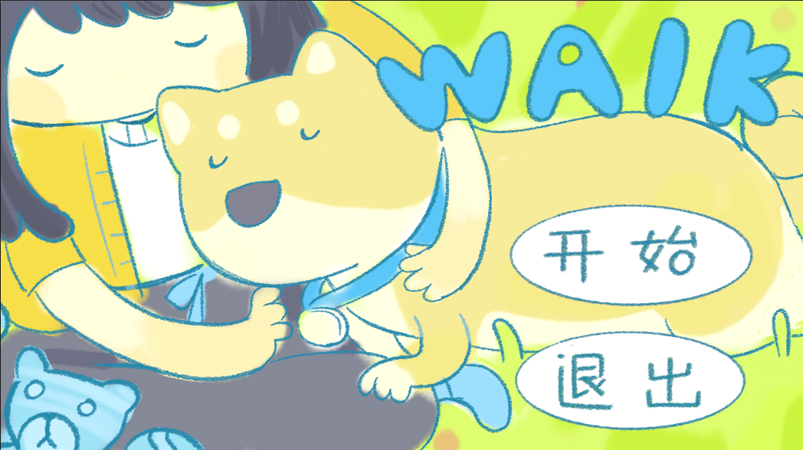
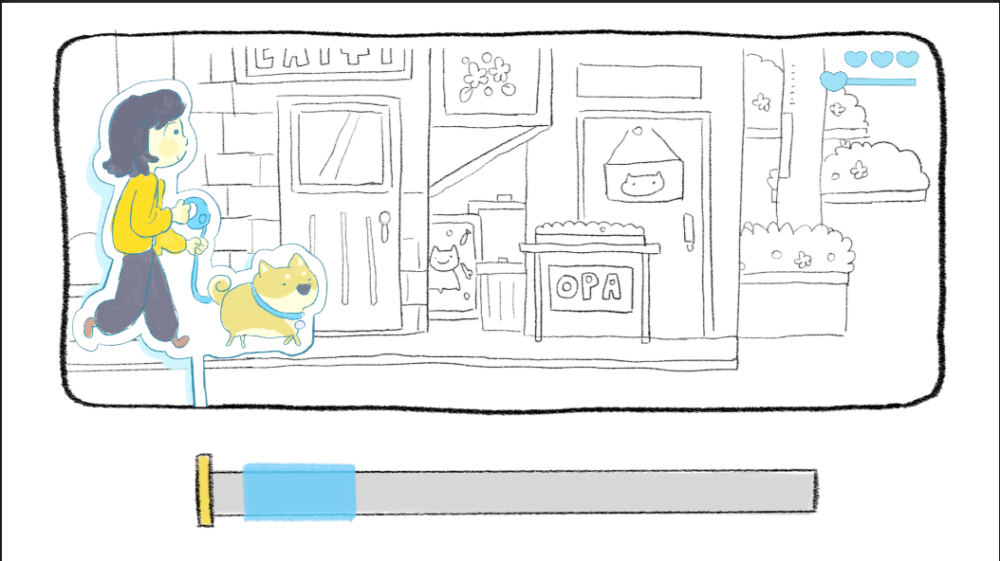
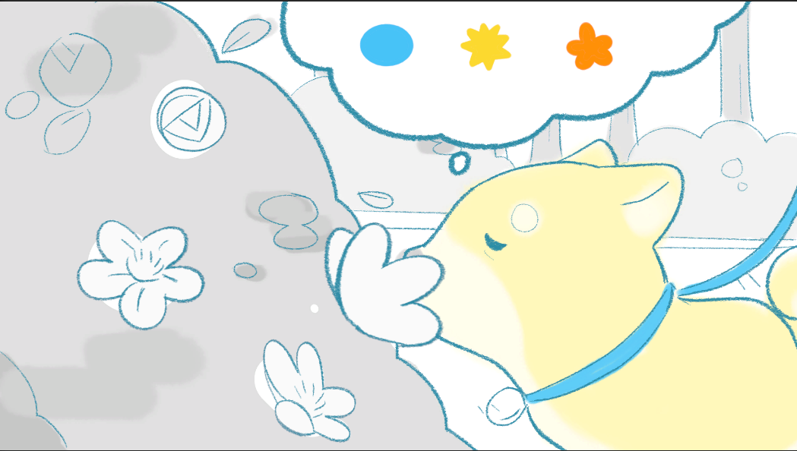
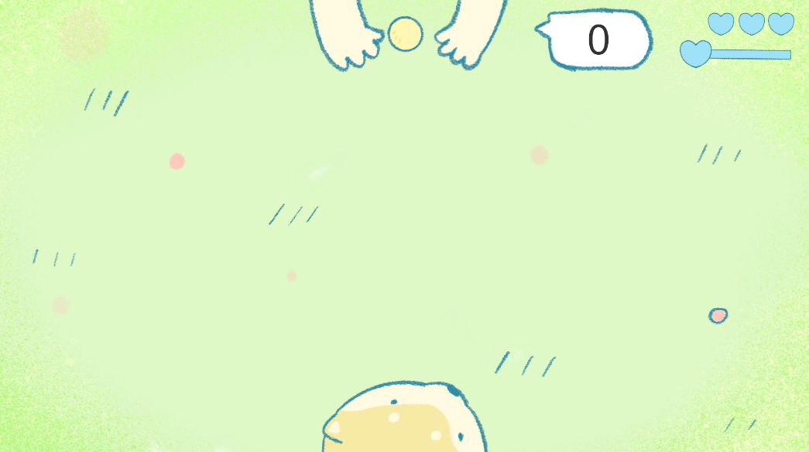

WALK — 豆花的回忆之旅
一只名为"豆花"的狗狗的生命旅程。24 个场景、十几种轻量小游戏被叙事串成一条线, 玩家用拉窗帘、转时钟、擦照片等隐喻动作参与一段告别。
- 设计心情系统:按用时与表现给 1–3 心,驱动地图枢纽推进
- 搭建双转场单例架构:黑场 / 白场异步加载,跨 24 场景无缝衔接
- 统一打字机对话范式:全项目复用,带随机 pitch 打字音效
- 12 类小游戏机制:拼图、张力条、时钟回忆、填色、刮刮乐、接球、气泡…